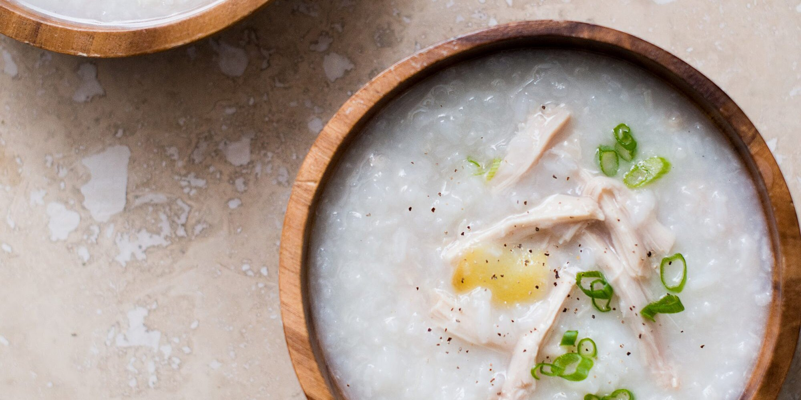

Pork Congee

Author
Chinese Cooking Demystified
Ingredients
- Bone-in Pork Chop (1-2)
- Water (10 cups)
- Jasmine Rice (½ cup)
- Oil (1 tsp)
- Salt (½ tsp)
- Century Egg (1)
- Salt (½ tsp)
- Chicken Bouillon Powder | MSG (1 tsp)
- White Pepper (½ tsp)
- Green Onion
- Century Egg (1) cut into eight slices
Steps
- Marinate Rice
- Marinate rinsed rice in oil and salt.
- Blanch Pork
- Blanch pork, then rinse.
- Boil
- Boil water
- Add pork, rice, century egg
- Bring up to heavy simmer
- Prop lid with chopsticks
- Cook for an hour
- Finish
- Remove pork/century egg
- Dice century egg, re-add to soup
- Add salt, bouillon, white pepper
- Plate, add green onion, century egg